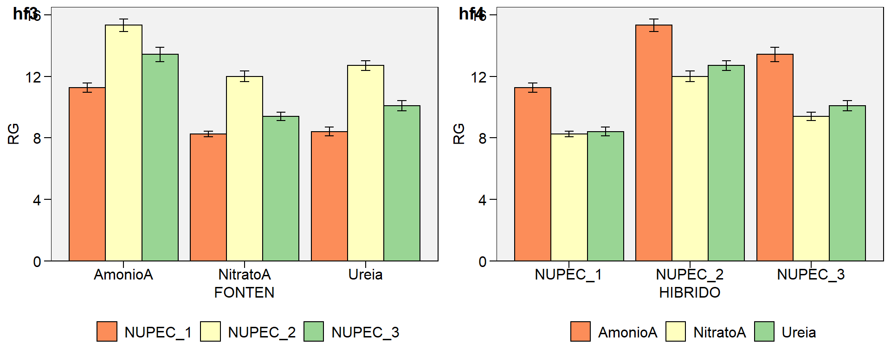
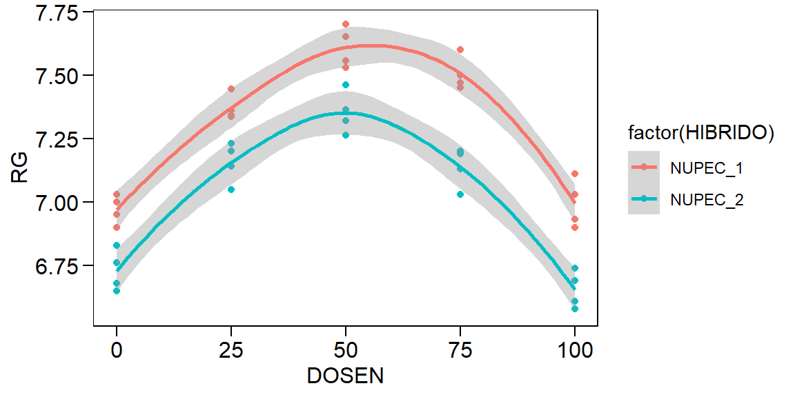

Capítulo 11 Análise de regressão
11.1 Regressão Linear
A análise de regressão tem como objetivo verificar como uma variável independente influencia a resposta de uma variável dependente. A análise de regressão é amplamente utilizada em ciências agrárias e pode ser dividida em simples ou múltipla. Na regressão simples, apenas uma variável dependente é declarada no modelo:
\[ Y_i = {\beta _0} + {\beta _1}x + \varepsilon_i \]
Onde \(Y_i\) é a variável dependente, \(x\) é a variável independente, \(\beta_0\) é o intercepto, \(\beta_1\) é a inclinação da reta e \(\varepsilon\) é o erro. Na regressão linear múltipla, mais de uma variável dependente é declarada no modelo:
\[ Y_i = {\beta _0} + {\beta _1}x_1 + {\beta _2}x_2 + ... + {\beta _k}x_k + \varepsilon_i \]
Onde \(Y_i\) é a variável dependente, \(x_1\), \(x_2\),…,\(x_k\) são as variáveis independentes, \(\beta_0\), \(\beta_1\), \(\beta_2\),…,\(\beta_2\) são os parâmetros da regressão e \(\varepsilon\) é o erro. Então, uma regressão por ser descrita genericamente por (Draper and Smith 1998)
\[ Y_i = f(x)+\varepsilon_i \]
Onde \(Y_i\) é a variável dependente, \(f(x)\) é a função resposta do modelo e \(\varepsilon\) é o erro.
11.1.1 Estimação
Uma das formas de estimar os parâmetros em regressão é minimizando os erros. Os erros são a diferença entre o valor estimado pela função resposta [(]\(f(x)\)] e o valor observado (\(Y_i\)), representados no gráfico abaixo por pontos vermelhos. Então, devemos encontrar valores para \({\boldsymbol{\beta}}\) que minimizem estes erros, representados pela distância entre a reta estimada e os valores observados.
data_error = data.frame(x = seq(0, 20, 2),
y = c(3,9,4,10,12,9,14,16,18,16,14))
mod = lm(y ~ x, data = data_error)
ggplot(data_error, aes(x, y)) +
geom_segment(aes(x = x, y = y, xend = x, yend = fitted(mod))) +
geom_point(color = "red") +
geom_smooth(se = FALSE, method = "lm")
Figure 11.1: Gráfico de dispersão de alguns dados com uma linha representando a tendência geral. As linhas verticais representam as diferenças (ou residuais) entre a linha e os dados observados.
Na figura abaixo, uma reta é traçada de modo que as distâncias entre ela e os pontos seja mínimo. Essa distância é obtida, pelo método dos mínimos quadrados, minimizando a soma de quadrados dos resíduos (uma vez que a soma dos resíduos é igual a zero).
\[ S = {\boldsymbol{\varepsilon '\varepsilon }} = \sum\limits_{i = 1}^n {{{\left( {{Y_i} - {{\hat Y}_i}} \right)}^2}} = 0 \]
Para encontrar os valores dos parâmetros que minimiza essa soma de quadrados basta resolver o sistema de equações normais, obtida após derivar \(S\) em relação aos parâmetros. A resolução deste sistema fornece estimativas não viesadas dos parâmetros \({\boldsymbol\hat\beta}\).
\[ \begin{array}{c}{\boldsymbol{X'X\beta = X'Y}}\\{\boldsymbol{\hat\beta}} = {\left( {{\boldsymbol{X'X}}}\right)^{- 1}}{\boldsymbol{X'Y}}\end{array} \]
Percebe-se que as estimativas dos parâmetros não tem nenhuma relação com os pressupostos de normalidade, homocedasticidade e independência dos resíduios. Porém, cumprir pressupostos é importante para testar hipóteses e construir intervalos de confiança. Outro aspecto importante na estimação é a necessidade da matriz \(\boldsymbol{X'X}\) ser não singular, pois assim é possível inverter essa matriz e resolver o sistema de equações normais obtendo parâmetros únicos. O sistema de equações normais também pode ser resolvido utilizando a inversa generalizada. Neste último caso, os valores dos parâmetros que resolvem o sistema de equações não são únicos. Para maiores detalhes sobre como estimar os parâmetros de regressões lineares, ver Draper and Smith (1998), Kutner et al. (2005) e Rencher and Schaalje (2008).
Vimos que uma matriz \(\boldsymbol{X'X}\) não singular é necessária para obtermos os parâmetros da nossa regressão. A não singularidade da matriz está relacionada com quanto as variáveis independentes estão correlacionadas. Quando as variáveis independentes estão aproximadamente (ou perfeitamente, o que é praticamente impossível) relacionadas dizemos que há elevada multicolinearidade. O principal problema da multicolinearidade está relacionado com as estimativas dos parâmetros. Quando ela é elevada, um conjunto de funções resposta minimiza os erros e prediz, com precisão, os valores observados.
Quando há multicolinearidade é possível resolver o sistema de equações normais utilizando a inversa generaliazada de Moore-Penrose, utilizando a função ginv() do pacote MASS. Utilizando a inversa generalizada minimiza-se a soma dos quadrados, porém não garante-se que os parâmetros sejam únicos. Então, qualquer inferências sobre como as variáveis se relacionam passa a ser duvidosa (Kutner et al. 2005).
Para demonstrar como a multicolinearidade afeta a estimativa dos parâmetros, utilizamos um exemplo hipotético de Kutner et al. (2005). Execute a programação em casa e veja os resultados.
X1 = c(2,8,6,10)
X2 = c(6,9,8,10)
cor(X1,X2) # correlação entre as variávies independentes
## Minimizando a soma de quadrados
require (nls2)
resultados = data.frame(matrix(ncol = 4,nrow = 20))
names(resultados) = c("b0","b1","b2","sigma")
for(i in 1:20){
Y = c(23,83,63,103)
X1 = c(2,8,6,10)
X2 = c(6,9,8,10)
grid = expand.grid(list(
b0 = seq(-i,i, by = 0.1),
b1 = seq(-i, i, by = 0.1),
b2 = seq(-i, i, by = 0.1)
)) # Armazenando um conjunto de valores que quero dar aos parâmetros
Resp = nls2(Y~b0+b1*X1+b2*X2,
start = grid,
algorithm = "brute-force")
b0 = summary(Resp)$coefficients[1,1]
b1 = summary(Resp)$coefficients[2,1]
b2 = summary(Resp)$coefficients[3,1]
sigma = summary(Resp)$sigma
;
resultados$b0[i] = b0
resultados$b1[i] = b1
resultados$b2[i] = b2
resultados$sigma[i] = sigma
}
resultadosQuando há multicolinearidade, conjuntos de diferentes parâmetros resolvem o sitema de equações normais e minimizam a soma de quadrados. Por isso, relacionar a resposta da variável dependente em função das variáveis independentes passa a ser impossível. Por isso, por exemplo, que a multicolinearidade é importante na análise de trilha. A relação entre as variáveis na análise de trilha é determinada com base no valor dos coeficientes de trilha, que nada mais são do que parâmetros de uma regressão múltipla.
11.1.2 Ajustando regressões com a função lm()
A função lm() é utilizada para ajustar regresões lineares simples e múltipla. Os argumentos mais importantes desta função são a formula, onde indicamos a função resposta; e data, onde indicamos o banco de dados. Vamos utiliza um exemplo simples retirado de Schenider, Schenider, and Souza (2009):
reg = read_excel("data/data_R.xlsx", sheet = "REG")
mod7 = lm(Y ~ X1 + X2 + X3, data = reg)
mod7.1 = lm(Y ~ 1, data = reg)
anova(mod7.1, mod7) # Verificar a significância do modeloAnalysis of Variance Table
Model 1: Y ~ 1
Model 2: Y ~ X1 + X2 + X3
Res.Df RSS Df Sum of Sq F Pr(>F)
1 12 1834.00
2 9 97.47 3 1736.5 53.449 4.653e-06 ***
---
Signif. codes: 0 '***' 0.001 '**' 0.01 '*' 0.05 '.' 0.1 ' ' 1Através da função anova(mod7.1, mod7) pode-se verificar se o modelo é ou não significativo. A hipótese \(H_0 = 0\) é rejeitada e conclui-se que o modelo explica o comportamento da variável resposta. Através da função summary() obtém-se o resultado do teste t para os parâmetros do modelo. A hipótese testada neste caso é \(H_0:\boldsymbol{\beta} = 0\) vs \(H_A:\boldsymbol{\beta}\ne 0\). Por fim, a função anova() retorna um teste F que possibilita verificar a contribuição de cada parâmetro em explicar a variabilidade da variável resposta.
Call:
lm(formula = Y ~ X1 + X2 + X3, data = reg)
Residuals:
Min 1Q Median 3Q Max
-5.4062 -2.2378 -0.3066 1.6321 4.8468
Coefficients:
Estimate Std. Error t value Pr(>|t|)
(Intercept) 7.86871 3.32628 2.366 0.0422 *
X1 2.72881 0.25198 10.830 1.84e-06 ***
X2 -1.92182 0.25540 -7.525 3.60e-05 ***
X3 -0.09752 0.15686 -0.622 0.5496
---
Signif. codes: 0 '***' 0.001 '**' 0.01 '*' 0.05 '.' 0.1 ' ' 1
Residual standard error: 3.291 on 9 degrees of freedom
Multiple R-squared: 0.9469, Adjusted R-squared: 0.9291
F-statistic: 53.45 on 3 and 9 DF, p-value: 4.653e-06Entre os parâmetros do modelo, apenas \(\hat{\beta_3}\) não foi significativo, indicando que não há necessidade dele ser incluido no modelo. Através do teste F é possível verificar qual o modelo (com ou sem \(\beta_3\)) é o mais parcimonioso. O teste F é dado por:
\[ F_{calc} = \frac{S{Q_{Erro}}(\Omega)- S{Q_{Erro}}(\omega)/G{L_{Erro}}(\Omega)- G{L_{Erro}}(\omega)} {Q{M_{Erro}}(\omega )}\ \]
Onde, \(SQ_{Erro}(\Omega)\) e \(SQ_{Erro}(\omega)\) são as somas de quadrados dos resíduos nos modelos completo e reduzido, respectivamente; \(G{L_{Erro}}(\omega)\) e \(G{L_{Erro}}(\Omega)\) são os graus de liberdade do resíduo do modelo completo e reduzido, respectivamente; e \(Q{M_{Erro}}(\omega )\) é o quadrado médio do resíduo do modelo completo. Podemos realizar o teste F utilizando a função anova():
Analysis of Variance Table
Model 1: Y ~ X1 + X2
Model 2: Y ~ X1 + X2 + X3
Res.Df RSS Df Sum of Sq F Pr(>F)
1 10 101.655
2 9 97.469 1 4.186 0.3865 0.5496Como ambos modelos são estatisticamente iguais, opta-se pelo modelo reduzido. O modelo que melhor se ajustou aos dados foi \(Y = 6.726 + 2.759X_1 - 1.937X_2\), \(R^2_{Aj} = 0.93\) superior a 90%.
(Intercept) X1 X2
6.726606 2.759633 -1.937615 11.1.3 Seleção de variáveis
Foi mostrado brevemente um exemplo de como ajustar e selecionar variáveis. Porém, no exemplo apresentado, utilizou-se somente três variáveis. No entanto, quando há um elevado número de variáveis, selecioná-las torna-se um trabalho um pouco mais complexo. Nestes casos é necessário utilizar algoritimos de seleção. Os mais comuns são o Forward, Backward e Stepwise.
Forward
No método forward parte-se de um modelo com uma variável independente, que é aquela que possui maior correlação amostral com a variável dependente. Posteriormente, realiza-se o teste F para verificar se ela é realmente é significativa. A segunda variável independente com maior correlação amostral com a variável dependente é adicionada ao modelo, e um teste F parcial verifica a significância. As variávies são adicionadas enquanto o F parcial for significativo.
X1 X2 X3
Y 0.7754301 -0.4558018 -0.2460537mod_for1 = lm(Y ~ 1, data = reg)
mod_for2 = lm(Y ~ X1, data = reg) # Adiciona X1
mod_for3 = lm(Y ~ X1 + X2, data = reg) # Adiciona X2
mod_for4 = lm(Y ~ X1 + X2 + X3, data = reg) # Adiciona X3
anova(mod_for1, mod_for2, mod_for3, mod_for4) # Seleciona o modelo Analysis of Variance Table
Model 1: Y ~ 1
Model 2: Y ~ X1
Model 3: Y ~ X1 + X2
Model 4: Y ~ X1 + X2 + X3
Res.Df RSS Df Sum of Sq F Pr(>F)
1 12 1834.00
2 11 731.23 1 1102.77 101.8264 3.318e-06 ***
3 10 101.66 1 629.58 58.1331 3.243e-05 ***
4 9 97.47 1 4.19 0.3865 0.5496
---
Signif. codes: 0 '***' 0.001 '**' 0.01 '*' 0.05 '.' 0.1 ' ' 1Backward
No método backward parte-se do modelo completo. As variávies candidatas a serem eliminadas são determinadas através do teste F parcial, como se elas fossem (hipoteticamente) as últimas a serem incluidas no modelo.
# F parcial para X3
mod_back.x3 = lm(Y~X1+X2+X3,data = reg)
mod_back.x3.1 = lm(Y~X1+X2,data = reg)
anova(mod_back.x3.1,mod_back.x3) # Menor F parcialAnalysis of Variance Table
Model 1: Y ~ X1 + X2
Model 2: Y ~ X1 + X2 + X3
Res.Df RSS Df Sum of Sq F Pr(>F)
1 10 101.655
2 9 97.469 1 4.186 0.3865 0.5496# F parcial para X2
mod_back.x2 = lm(Y~X1+X2+X3,data = reg)
mod_back.x2.1 = lm(Y~X1+X3,data = reg)
anova(mod_back.x2.1,mod_back.x2)Analysis of Variance Table
Model 1: Y ~ X1 + X3
Model 2: Y ~ X1 + X2 + X3
Res.Df RSS Df Sum of Sq F Pr(>F)
1 10 710.70
2 9 97.47 1 613.23 56.624 3.598e-05 ***
---
Signif. codes: 0 '***' 0.001 '**' 0.01 '*' 0.05 '.' 0.1 ' ' 1# F parcial para X1
mod_back.x1 = lm(Y~X1+X2+X3,data = reg)
mod_back.x1.1 = lm(Y~X2+X3,data = reg)
anova(mod_back.x1.1,mod_back.x1) # Maior F parcial Analysis of Variance Table
Model 1: Y ~ X2 + X3
Model 2: Y ~ X1 + X2 + X3
Res.Df RSS Df Sum of Sq F Pr(>F)
1 10 1367.60
2 9 97.47 1 1270.1 117.28 1.836e-06 ***
---
Signif. codes: 0 '***' 0.001 '**' 0.01 '*' 0.05 '.' 0.1 ' ' 1# Elimina a 3, depois a 2 e depois a 1
mod_back1 = lm(Y~X1+X2+X3,data = reg)
mod_back2 = lm(Y~X1+X2,data = reg)
anova(mod_back2,mod_back1) # elimina X3Analysis of Variance Table
Model 1: Y ~ X1 + X2
Model 2: Y ~ X1 + X2 + X3
Res.Df RSS Df Sum of Sq F Pr(>F)
1 10 101.655
2 9 97.469 1 4.186 0.3865 0.5496mod_back2 = lm(Y~X1+X2,data = reg)
mod_back3 = lm(Y~X1,data = reg)
anova(mod_back3,mod_back2) # não elimina X2 e selecionaAnalysis of Variance Table
Model 1: Y ~ X1
Model 2: Y ~ X1 + X2
Res.Df RSS Df Sum of Sq F Pr(>F)
1 11 731.23
2 10 101.66 1 629.58 61.933 1.359e-05 ***
---
Signif. codes: 0 '***' 0.001 '**' 0.01 '*' 0.05 '.' 0.1 ' ' 1Stepwise
O método stepwise utiliza características dos métodos forward e backward. Neste método parte-se de um modelo composto pela variável com maior correlação amostral. A cada variável adicionada por forward, é relizado um backward para retirar uma das variáveis previamente adicionadas.
# Passo 1
mod_step1.0 = lm(Y ~ 1, data = reg)
mod_step1 = lm(Y ~ X1, data = reg)
anova(mod_step1.0, mod_step1) # adiciona X1Analysis of Variance Table
Model 1: Y ~ 1
Model 2: Y ~ X1
Res.Df RSS Df Sum of Sq F Pr(>F)
1 12 1834.00
2 11 731.23 1 1102.8 16.589 0.001842 **
---
Signif. codes: 0 '***' 0.001 '**' 0.01 '*' 0.05 '.' 0.1 ' ' 1# Passo 2
mod_step2 = lm(Y ~ X1, data = reg)
mod_step2.1 = lm(Y ~ X1 + X2, data = reg)
anova(mod_step2, mod_step2.1) # adiciona X2Analysis of Variance Table
Model 1: Y ~ X1
Model 2: Y ~ X1 + X2
Res.Df RSS Df Sum of Sq F Pr(>F)
1 11 731.23
2 10 101.66 1 629.58 61.933 1.359e-05 ***
---
Signif. codes: 0 '***' 0.001 '**' 0.01 '*' 0.05 '.' 0.1 ' ' 1Analysis of Variance Table
Model 1: Y ~ X2
Model 2: Y ~ X1 + X2
Res.Df RSS Df Sum of Sq F Pr(>F)
1 11 1452.98
2 10 101.66 1 1351.3 132.93 4.251e-07 ***
---
Signif. codes: 0 '***' 0.001 '**' 0.01 '*' 0.05 '.' 0.1 ' ' 1# Passo 3
mod_step3 = lm(Y ~ X1 + X2, data = reg)
mod_step3.1 = lm(Y ~ X1 + X2 + X3,data = reg)
anova(mod_step3, mod_step3.1) # não adiciona X3, seleciona o modeloAnalysis of Variance Table
Model 1: Y ~ X1 + X2
Model 2: Y ~ X1 + X2 + X3
Res.Df RSS Df Sum of Sq F Pr(>F)
1 10 101.655
2 9 97.469 1 4.186 0.3865 0.5496As análises acima foram demonstradas apenas para detalhar o funcionamento dos algoritimos de seleção, utilizando F parcial. O F parcial é muito rigoroso, e por isso muitas vezes o pesquisador usa valores de \(\alpha\) maiores que 5%. Além disso, várias funções do R estão disponíveis para selecionar variáveis utilizando diferentes diferentes critérios. As funções ols_step_forward_p(), ols_step_backward_p() e ols_step_both_p() do pacote olsrr39 selecionam variávies utilizando utilizado forward, backward ou stepwise, respectivamente, considerando p-valores para critério de decisão de inclusão/remoção de variáveis.
,
11.1.4 Falta de ajuste
Quando várias observações são realizadas para cada variável independente (experimentos com repetição, por exemplo), é necessário verificar a falta de ajuste. Nestes casos, o erro é dividido em duas partes: a) o erro puro, que consiste na diferença entre a média e as observações em cada variável; b) falta de ajuste, que é a diferença entre a média da variável independente e o valor ajustado pela regressão.
\[ {Y_{ij}} - {\hat Y_i} = \left( {{Y_{ij}} - {{\bar Y}{i.}}} \right) + \left( {{{\bar Y}{i.}} - {{\hat Y}_i}} \right) \]
Onde \(\hat{Y_{ij}}-Y_{ij}\) é o erro do modelo, \((Y_{ij}-\bar{Y_j})\) é o erro puro e \((\hat{Y_{ij}}-\bar{Y_j})\) é a falta de ajuste.
mod10 = lm(RG ~ DOSEN, data = quantitativo) # Regressão linear
mod10.1 = lm(RG ~ factor(DOSEN), data = quantitativo) #falta de ajuste
anova(mod10, mod10.1) # Erro puroAnalysis of Variance Table
Model 1: RG ~ DOSEN
Model 2: RG ~ factor(DOSEN)
Res.Df RSS Df Sum of Sq F Pr(>F)
1 18 4.5135
2 15 0.6046 3 3.9089 32.325 8.625e-07 ***
---
Signif. codes: 0 '***' 0.001 '**' 0.01 '*' 0.05 '.' 0.1 ' ' 1A significância do teste F indica que o modelo linear não é adequado para representar a relação entre as variávies dependentes e independentes. Isso indica que o modelo ajustado “não se aproxima” satisfatoriamente da média das variávies independentes, e que a falta de ajuste é elevada quando comparado ao erro puro. Agora, vamos ajustar um modelo quadrático:
Analysis of Variance Table
Model 1: RG ~ DOSEN + I(DOSEN^2)
Model 2: RG ~ factor(DOSEN)
Res.Df RSS Df Sum of Sq F Pr(>F)
1 17 0.70710
2 15 0.60463 2 0.10247 1.271 0.3091A não significância do teste F indica que o modelo quadrático é adequado para representar a relação entre as variávies dependentes e independentes. Aqui o exemplo é apresentado para um ajuste de polinômios, mas sua aplicação se estende a qualquer regressão (linear simples, múltipla ou regressão não linear).
11.1.5 Análise dos resíduos
Na análise de regressão, os resíduos devem ser normalmente distribuídos, homocedásticos e independentes. O diagnóstico é realizado por testes estatísticos ou através de análise gráfica.
Shapiro-Wilk normality test
data: residuos
W = 0.95282, p-value = 0.412
Bartlett test of homogeneity of variances
data: residuos by DOSEN
Bartlett's K-squared = 4.3887, df = 4, p-value = 0.3559
A análise dos resíduos também pode indicar a necessidade de adicionar variávies explicativas ao modelo. Por exemplo, vamos analisar os resíduos de um modelo linear ajustados a dados que tem (conhecidamente) comportamento quadrático.

Percebe-se, pelo gráfico residuals vs fitted, que os resíduos não são aleatoriamente distribuídos em torno de zero. A distribuição sistemática dos resíduos indica que uma variável que explica consideravelmente a variabilidade dos dados não foi incluída no modelo (no caso o termo quadrático do polinômio).
11.1.6 Pontos influentes
As observações influentes podem ser mensuradas através da distância de Cook, DFBETA e DFFITS. O DFFITS e a distância de Cook medem a influência das observações sobre a predição das variávies; e o DFBETA mede a influência destas observações sobre as estimativas dos parâmetros.
Vamos utilizar as funções gráficas do pacote olsrr para fazer o diagnóstico dos pontos infuentes.

Figure 11.2: Distância de Cook representando a influencia dos pontos na predição das variávies


As observações 8 e 12 são as que mais influenciam os valores preditos e as estimativas dos parâmetros. Os limites pela distância de Cook, DFBETA e DFFITS para realizar o diagnóstico são \(\frac{4}{n} = \frac{4}{20} = 0,20\), \(\frac{2}{\sqrt{n}} = \frac{2}{\sqrt{2}} = 0,45\) e \(2 \times \sqrt {\frac{p}{n}} = 2 \times \sqrt {\frac{3}{{20}}} = 0,77\), respectivamente.
11.2 Regressão não linear
Uma regressão é dita não linear quando os parâmetros não encontram-se de forma aditiva no modelo. Devido a isso, o sistema de equações normais \({\left( {{\boldsymbol{X'X}}} \right)^{{\boldsymbol{ - 1}}}}{\boldsymbol{\beta = X'Y}}\) não pode ser resolvido analiticamente, e os parâmetros precisam ser estimados utilizando métodos iterativos.
11.2.1 Estimação
A estimação dos parâmetros é realizado pelo método dos mínimos quadrados . O método iterativo utilizado nos softwares R e SAS, por exemplo, é o de Gauss-Newton. Este método utiliza aproximações lineares de Taylor de primeira ordem da função resposta, dada por
\[ f\left( {x,{\boldsymbol{\theta }}} \right) = f\left( {x,{{\boldsymbol{\theta }}^0}} \right) + \frac{{\partial f\left( {x,{{\boldsymbol{\theta }}^0}} \right)}}{{\partial {\boldsymbol{\theta }}}}\left( {{\boldsymbol{\theta }} - {{\boldsymbol{\theta }}^0}} \right) \]
Essa aproximação linear de primeira ordem pode ser simplificada por \(f\left( {\boldsymbol{\theta }} \right) = f\left( {{{\boldsymbol{\theta }}^0}} \right) + {\boldsymbol{F}}\left( {{\boldsymbol{\theta }} - {{\boldsymbol{\theta }}^0}} \right)\). Substituindo-a na função que minimiza a soma de quadrados, temos:
\[ \begin{array}{c}S\left( {\boldsymbol{\theta }} \right) = \sum\limits_{i = 1}^n {{{\left( {y - f\left( {{\boldsymbol{\hat \theta }}} \right)} \right)}^2}} \\S\left( {\boldsymbol{\theta }} \right) = \sum\limits_{i = 1}^n {{{\left( {y - f\left( {{{\boldsymbol{\theta }}^0}} \right) - {\boldsymbol{F}}\left( {{\boldsymbol{\theta }} - {{\boldsymbol{\theta }}^0}} \right)} \right)}^2}} \\S\left( {\boldsymbol{\theta }} \right) = \sum\limits_{i = 1}^n {{{\left( {\varepsilon - {\boldsymbol{F}}\left( {{\boldsymbol{\theta }} - {{\boldsymbol{\theta }}^0}} \right)} \right)}^2}} \end{array} \]
Percebe-se que a matriz \(\boldsymbol{F}\), que substitui \(\boldsymbol{X}\), é sempre dependente de um dos parâmetros do modelo, e por isso o sistema de equações não tem resolução analítica. O sistema de equações não linear acima é resolvido por \({\boldsymbol{\theta }} - {{\boldsymbol{\theta }}^{\boldsymbol{0}}} = {\left( {{\boldsymbol{F}}'{\boldsymbol{F}}} \right)^{ - 1}}{\boldsymbol{F}}'{\boldsymbol{\varepsilon }}\), que reorganizada como \({\boldsymbol{\theta }} = {{\boldsymbol{\theta }}^{\boldsymbol{0}}} + {\left( {{\boldsymbol{F}}'{\boldsymbol{F}}} \right)^{ - 1}}{\boldsymbol{F}}'{\boldsymbol{\varepsilon }}\), corresponde ao primeiro passo do método iterativo de Gauss-Newton. Para algoritimo seja iniciado, um valor inicial para os parâmetros deve ser declarado. O processo é repetido até obter convergência, que ocorre quando os valores estimados em cada passo são próximos um dos outros.
11.2.2 Ajustando o modelo com a função nls()
A função nls() pode ser utilizada para ajustar modelos não lineares. Os principais argumentos da função são: i) formula, onde o modelo é declarado; ii) data, onde os dados são declarados e iii) start , que é uma lista com os valores iniciais dos parâmetros.
Valores iniciais dos parâmetros
O primeiro passo da análise é encontrar os valores iniciais dos parâmetros. O método gráfico é útil para cumprir esse objetivo. Valores dos parâmetros são declarados até o ponto em que a curva gerada se aproxime dos valores observados. A programação que será apresentada foi obtida no blog Ridículas, mantido pelo LEG da UFPR. Utilizaremos como exemplo o modelo logístico (uma de suas parametrizações), dado por
\[ {Y_i} = \frac{{{\beta _1}}}{{1 + {e^{\left( {{\beta _2} - {\beta _3}{t_i}} \right)}}}} + {\varepsilon _i} \]
nls_tomato = read_excel("data/data_R.xlsx", sheet = "TOMATE")
nls_tomato_cord = subset(nls_tomato,Genotipo == "Cordillera") # Modelo logístico
logi <- function(x, b1, b2, b3){
b1 / (1 + exp(b2 - b3 * x))
}
start=list()
manipulate({
plot(num~DAT,data = nls_tomato_cord)
curve(logi(x, b1=b1,b2=b2,b3=b3),add=TRUE)
start<<-list(b1=b1,b2=b2,b3=b3)},
b1=slider(0,50,initial=10),
b2=slider(0, 20,initial=5),
b3=slider(0, 1,initial=0)
)
Manipulando os valores dos parâmetros
Ajustando o modelo
Os valores iniciais serão armazenados na lista start, e esta será declarada no argumento start da função nls() . A função summary() retorna o teste de Wald para os parâmetros.
nls1 = nls(num~b1/(1+exp(b2-b3*DAT)),
data = nls_tomato_cord, # indica os dados
start = start) # indica os valores iniciais
summary(nls1)
Formula: num ~ b1/(1 + exp(b2 - b3 * DAT))
Parameters:
Estimate Std. Error t value Pr(>|t|)
b1 39.68149 1.50505 26.37 1.96e-07 ***
b2 13.53980 0.94913 14.27 7.42e-06 ***
b3 0.13390 0.01018 13.15 1.19e-05 ***
---
Signif. codes: 0 '***' 0.001 '**' 0.01 '*' 0.05 '.' 0.1 ' ' 1
Residual standard error: 0.9108 on 6 degrees of freedom
Number of iterations to convergence: 7
Achieved convergence tolerance: 8.502e-0611.2.3 Análise dos resíduos
Os resíduos dos modelos não lineares também deve ser normalmente distribuídos, homocedásticos e independentes. Os testes estatísticos e a análise dos resíduos seguem os mesmos princípios dos modelos lineares.
require(lmtest) # pacote para carregar teste de Breusch-Pagan (homogeneidade)
require (car) # pacote para carregar teste de DW (independência)
### Normalidade
res_nls1 = residuals(nls1)
shapiro.test(res_nls1)
Shapiro-Wilk normality test
data: res_nls1
W = 0.92624, p-value = 0.4464nls1_grad = attr(nls1$m$fitted(), "gradient") # obtem matriz gradiente
nls1_lm = lm(num~-1+nls1_grad, data = nls_tomato_cord)
bptest(nls1_lm) # teste de Breusch-Pagan (homogeneidade)
studentized Breusch-Pagan test
data: nls1_lm
BP = 1.5734, df = 2, p-value = 0.4554 lag Autocorrelation D-W Statistic p-value
1 0.08163678 1.763777 0.248
Alternative hypothesis: rho != 0O cumprimento dos pressupostos dos resíduos não afeta a estimativa dos parâmetros, mas é de extrema importância para construir intervalos de confiança e testar hipóteses. Percebe-se, no nosso exemplo, que os pressuposto foram cumpridos (p-valor>0,05). Para realizar a análise gráfica dos resíduos pode-se utilizar a função nlsResiduals() do pacote nlstools.

No exemplo acima, apenas uma observação foi realizada para cada variável independente (dias após o transplante, no caso). Por isso optou-se por utilizar o teste de Breusch-Pagan para realizar o diagnóstico de homocedasticidade dos resíduos. Quando mais de uma observação é realizada em cada variável independente, pode-se utilizar os testes de Bartlett ou Levene.
11.2.4 Medidas de não linearidade
Conforme vimos acima, a estimação dos parâmetros é realizada pelo método dos mínimos quadrados utilizando aproximações lineares de Taylor da função resposta. É esta aproximação linear que garante que os parâmetros estimados sejam proximos de não viesados (só serão não viesados assintoticamente). Modelos com aproximação linear pobre tendem a ter parâmetros muito viesados, o que impede que eles sejam utilizados para explicar determinado fenomeno biológico (eles tem ineterpretação biológica). As medidas de curvatura de Bates e Watts são amplamente utilizadas para avaliar o grau de não linearidade da função resposta. Para maiores detalhes, ver Bates and Watts (1988), cap. 7 e Seber and Wild (2003), cap. 4. Essas medidas são facilmente implementadas através da função rms.curv() do pacote MASS. Para isto, utilizaremos o modelo ajustado nls1
start = list(b1 = 30, b2 = 19, b3 = 0.2)
## Medidas de não linearidade
nls1_hess = deriv3(~b1/(1 + exp(b2 - b3 * DAT)), c("b1","b2","b3"),
function(DAT,b1,b2,b3)NULL) ## hessiana
nls1_hess.1 = nls(num ~ nls1_hess(DAT,b1,b2,b3),
data = nls_tomato_cord,
start = start)
rms.curv(nls1_hess.1)Parameter effects: c^theta x sqrt(F) = 0.806
Intrinsic: c^iota x sqrt(F) = 0.1235 Os valores que a função rms.curv() retorna são \({c^\theta } \times \sqrt {{F_{\alpha ;p,n - p}}}\) e \({c^\iota } \times \sqrt {{F_{\alpha ;p,n - p}}}\). Valores baixos destas duas medidas indicam que a função tem boa aproximação linear e, consequentemente, os parâmetros são próximos de ser não viesados.
11.2.5 Comparação de parâmetros
Os parâmetros em um modelo podem ser comparados utilizando variávies dummy. Utilizando esta técnica, a ocorrência de um determinado fator é associado a um nova variável. Como os modelos são aninhados, pode-se utilizar o teste F para verificar a significância do parâmetro (e, consequentemente, do fator) associado a esta variável.
Vamos ao exemplo. Suponha que queiramos comparar a produção e a taxa de producão de frutos de dois genótipos de tomate. Sabemos que quando acumuladas, a podução de olerícolas tem comportamento sigmoide (Lúcio, Nunes, and Rego 2015; Lucio, Nunes, and Rego 2016), o que permite deteminar essas caracteristicas através dos parâmetros de um modelo logístico:
\[ {Y_i} = \frac{{{\beta _1}}}{{1 + {e^{\left( {{\beta _2} - {\beta _3}{t_i}} \right)}}}} + {\varepsilon _i} \]
No modelo acima, \(\beta_1\) representa a assíntota, e está associada a produção total dos genótipos; \(\beta_3\) é a taxa de produção de frutos, e está associada a precocidade produtiva dos genótipos (Sari et al. 2018). Vamos testar as seguintes hipóteses:
\[ \begin{array}{*{20}{c}}{{H_0} = {\beta _{11}} = {\beta _{12}}}&{{H_0} = {\beta _{31}} = {\beta _{32}}}\\{{H_A} = {\beta _{11}} \ne {\beta _{12}}}&{{H_A} = {\beta _{31}} \ne {\beta _{32}}}\end{array} \]
Testando a hipótese \(H_0:\beta_{11} = \beta_{12}\)
Associamos os fatores a novas variávies através de uma nova coluna no banco de dados. No nosso caso, a coluna “Completo” associa o fator aos parâmetros do modelo logístico. Então, como o modelo logístico possui 3 parâmetros, ao associarmos variávies dummys ao fator genótipo (são dois genótipos), o modelo completo passa a ter 6 parâmetros.
Para tertar esta hipótese, associamos variáveis dummy s apenas aos parâmetros \(\beta_1\) e \(\beta_3\). Neste caso, o modelo passa a ter 5 parâmetros (1 \(\beta_1\), 2 \(\beta_2\) e 2 \(\beta_3\)). Podemos comparar esse modelo reduzido com o modelo completo de 6 parâmetros. Se o teste F der significativo, concluímos que há influência do fator genótipo.
nls_dummy = nls_tomato %>%
mutate_at(vars(Genotipo, Completo, Reduzido), as.factor)
## Modelo completo
tomato_completo = nls(num~b1[Completo]/(1+exp(b2[Completo]-b3[Completo]*DAT)),
data = nls_dummy,
start = list(
b1 = c(18.94,39.68),
b2 = c(16.04,13.54),
b3 = c(0.17,0.13)))
## Modelo reduzido
tomato_reduzido.b1 = nls(num~b1[Reduzido]/(1+exp(b2[Completo]-b3[Completo]*DAT)),
data = nls_dummy,
start = list(
b1 = c(18.94),
b2 = c(16.04,13.54),
b3 = c(0.17,0.13)))
anova(tomato_reduzido.b1, tomato_completo)Analysis of Variance Table
Model 1: num ~ b1[Reduzido]/(1 + exp(b2[Completo] - b3[Completo] * DAT))
Model 2: num ~ b1[Completo]/(1 + exp(b2[Completo] - b3[Completo] * DAT))
Res.Df Res.Sum Sq Df Sum Sq F value Pr(>F)
1 13 55.636
2 12 7.833 1 47.802 73.228 1.875e-06 ***
---
Signif. codes: 0 '***' 0.001 '**' 0.01 '*' 0.05 '.' 0.1 ' ' 1Os valores da assintota diferem estatisticamente entre si. Percebe-se claramente que o genótipo Cordillera foi mais produtivo que o genótipo Gaúcho.
Testando a hipótese \(H_0:\beta_{31} = \beta_{32}\)
## Modelo completo
tomato_completo = nls(num~b1[Completo]/(1+exp(b2[Completo]-b3[Completo]*DAT)),
data = nls_dummy,
start = list(
b1 = c(18.94,39.68),
b2 = c(16.04,13.54),
b3 = c(0.17,0.13)))
## Modelo reduzido
tomato_reduzido.b3 = nls(num~b1[Completo]/(1+exp(b2[Completo]-b3[Reduzido]*DAT)),
data = nls_dummy,
start = list(
b1 = c(18.94,39.68),
b2 = c(16.04,13.54),
b3 = c(0.16)))
anova(tomato_reduzido.b3, tomato_completo)Analysis of Variance Table
Model 1: num ~ b1[Completo]/(1 + exp(b2[Completo] - b3[Reduzido] * DAT))
Model 2: num ~ b1[Completo]/(1 + exp(b2[Completo] - b3[Completo] * DAT))
Res.Df Res.Sum Sq Df Sum Sq F value Pr(>F)
1 13 10.1479
2 12 7.8335 1 2.3144 3.5454 0.08417 .
---
Signif. codes: 0 '***' 0.001 '**' 0.01 '*' 0.05 '.' 0.1 ' ' 1Os valores da taxa de produção de frutos não diferem estatisticamente entre si.
11.2.6 Representação gráfica dos modelos
Percebe-se claramente que um modelo comum aos dois genótipos não é possível (assintota diferem entre si). Por isso, optou-se por gerar um modelo em separado para cada genótipo. Podemos representar isso graficamente utilizando a função ggplot() .
formula = as.formula("y ~ b1/(1 + exp(b2-b3*x))")
start = list(b1 = 10.224, b2 = 6.765, b3 = 0.0725)
ggplot(nls_tomato, aes(x = DAT, y = num, colour = Genotipo)) +
geom_point() +
geom_smooth(method = "nls",
method.args = list(formula = formula,
start = start),
se = F,
data = subset(nls_tomato, Genotipo == "Cordillera")) +
geom_smooth(method = "nls",
method.args = list(formula = formula,
start = start),
se = F,
data = subset(nls_tomato, Genotipo == "Gaucho"))+
theme(legend.position = "bottom")+
labs(x = "Dias após o transplante", y = "Número de frutos")
Figure 11.3: Representação gráfica em modelos não lineares
11.3 Regressão bisegmentada com platô
Continuaremos tomando como exemplo a produção de olerícolas de múltiplas colheitas para exemplificar o uso deste tipo de regressão. Os modelos com platô são modelos bi-segmentados cujo primeiro segmento descreve o crescimento da produção até determinado ponto, e um segundo segmento que descreve a estabilização da produção (platô). Podemos representar um modelo linear-platô por:
\[ {Y_i} = \left\{ \begin{array}{l}{\beta _0} + {\beta _1}x + {\varepsilon _i}{\rm{, se }}{X_i}{\rm{ < }}{X_0}\\P{\rm{ se }}{X_i}{\rm{ > }}{X_0}{\rm{ }}\end{array} \right. \]
plato_tomato = read_excel("data/data_R.xlsx", sheet = "PLATO")
plato_cordillera = nls(num~(b0+b1*DAT*(DAT<= P))+
(b1*P*(DAT>P)),
data = subset(plato_tomato, Genotipo == "Cordillera"),
start = list(b0 = 5, b1 = 11/8, P = 15))
plato_SantaCl = nls(num~(b0+b1*DAT*(DAT<= P))+
(b1*P*(DAT>P)),
data = subset(plato_tomato, Genotipo == "Santa.Clara"),
start = list(b0 = 5, b1 = 11/8, P = 15))O genótipo Cordillera produz a uma taxa de 1,33 frutos dia\(^-1\) até os ~9 dias após o início das colheitas, quando começa a estabilizar a produção (17,19 frutos). Já o genótipo Santa Clara produz a uma taxa de 0,71 frutos \(^-1\) até os ~14 dias após o início das colheitas, quando começa a estabilizar a produção (12,69 frutos). Podemos verificar a taxa de produção e o ponto de estabilização através de variáveis dummy .
plato_dummy = plato_tomato %>%
mutate_at(vars(Genotipo, Completo, Reduzido), as.factor)
# Modelo completo
plato_completo = nls(num~(b0[Completo]+b1[Completo]*DAT*(DAT<= P[Completo]))+
(b1[Completo]*P[Completo]*(DAT>P[Completo])),
data = plato_dummy,
start = list(b0 = c(4.8,2.5),
b1 = c(1.33,0.71),
P = c(9.28,14.36)))
# Modelo reduzido (taxa de produção)
plato_reduzido.b1 = nls(num~(b0[Completo]+b1[Reduzido]*DAT*(DAT<= P[Completo]))+
(b1[Reduzido]*P[Completo]*(DAT>P[Completo])),
data = plato_dummy,
start = list(b0 = c(4.8,2.5),
b1 = c(1),
P = c(9.28,14.36)))
anova(plato_reduzido.b1, plato_completo)
# Modelo reduzido (Platô)
plato_reduzido.P = nls(num~(b0[Completo]+b1[Completo]*DAT*(DAT<= P[Reduzido]))+
(b1[Completo]*P[Reduzido]*(DAT>P[Reduzido])),
data = plato_dummy,
start = list(b0 = c(4.8,2.5),
b1 = c(1.33,0.71),
P = c(12)))
anova(plato_reduzido.P,plato_completo)Percebe-se que a taxa de produção do genótipo Cordillera é significativamente superior a taxa de produção do genótipo Santa Clara. Como consequência, o momento de estabilização da produção ocorre mais precocemente no genótipo Cordillera. O exemplo foi realizado com dados de produção de olerícolas, mas pdoe ser adaptado para qualquer estudo (desde que tenha este comportamento).
Representação gráfica dos modelos
plot(num~DAT,data = subset(plato_tomato,Genotipo == "Cordillera"),ylim = c(0,20),
xlab = "Dias após o transplante (DAT)",
ylab = "Número de frutos por planta",pch = 1,lwd = 2)
points(num~DAT,data = subset(plato_tomato,Genotipo == "Santa.Clara"),pch = 2,lwd = 2)
segments(y0 = 4.8385, x0 = 0, y1 = 17.2083, x1 = 9.28641,lty = 1,lwd = 2)
segments(y0 = 17.2083, x0 = 9.28641, y1 = 17.2083, x1 = 20,lty = 1,lwd = 2)
segments(y0 = 2.5000, x0 = 0, y1 = 12.7655, x1 = 14.3606,lty = 2,lwd = 2)
segments(y0 = 12.7655, x0 = 14.3606, y1 = 12.7655, x1 = 20,lty = 2,lwd = 2)
legend("bottomright", legend = c("Cordillera", "Santa Clara"), lty = c(1,2),
pch = c(1,2), lwd = c(2,2),bty = "n")
Figure 11.4: Representação gráfica de regressão bisegmentada com platô
References
Bates, D. M., and D. G. Watts. 1988. Nonlinear Regression Analysis and Its Applications. 2nd ed. Wiley Series in Probability and Statistics. Hoboken, NJ, USA: John Wiley & Sons, Inc. https://doi.org/10.1002/9780470316757.
Draper, Norman R, and Harry Smith. 1998. Applied regression analysis. John Wiley & Sons. https://books.google.com.br/books?hl=pt-BR{\&}lr={\&}id=uSReBAAAQBAJ{\&}oi=fnd{\&}pg=PT12{\&}ots=P9bwDDSasT{\&}sig=4RbKqw-ZEgE40xtra-EsI9dLDPk.
Kutner, Michael H., Chris Nachtsheim, John Neter, and William Li. 2005. Applied linear statistical models.
Lucio, Alessandro Dal Col, Luis F Nunes, and Francisco Rego. 2016. “Nonlinear regression and plot size to estimate green beans production.” Horticultura Brasileira 34 (4): 507–13. https://doi.org/10.1590/s0102-053620160409.
Lúcio, Alessandro Dal Col, Luis Filipe Nunes, and Francisco Rego. 2015. “Nonlinear models to describe production of fruit in Cucurbita pepo and Capiscum annuum.” Scientia Horticulturae 193: 286–93. https://doi.org/10.1016/j.scienta.2015.07.021.
Rencher, Alvin C., and G. Bruce. Schaalje. 2008. Linear models in statistics. John Wiley & Sons.
Sari, Bruno G., Tiago Olivoto, Maria I. Diel, Dionatan K. Krysczun, Alessandro D. C. Lúcio, and Taciana V. Savian. 2018. “Nonlinear Modeling for Analyzing Data from Multiple Harvest Crops.” Agronomy Journal 110 (August): 1–12. https://doi.org/10.2134/agronj2018.05.0307.
Schenider, P. R., P. S. P. Schenider, and C. A. M. Souza. 2009. Analise de regressao aplicada a engenharia florestal. Santa Maria: FACOS, UFSM.
Seber, G. A. F., and C. J. Wild. 2003. Nonlinear regression. John Wiley & Sons, Inc. https://www.wiley.com/en-us/Nonlinear+Regression-p-9780471471356.